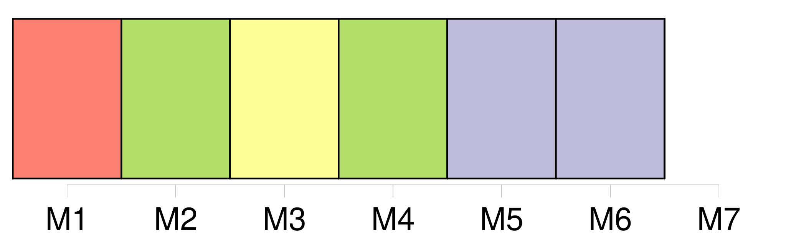
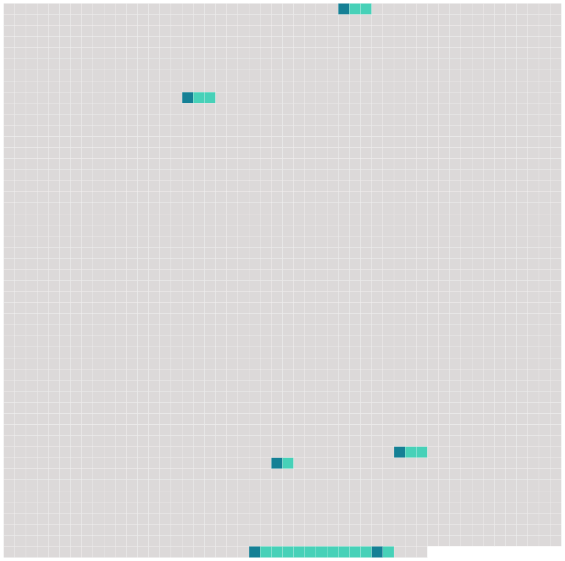

Longueur nb maillons : 6 mentions |
  |
Lorsque 142 tout un troupeau s'enfuit, 143 les raies 144 des divers individus se mélangent, rendant flou 145 le contour d'146 un animal 147 aux yeux [d'un lion] , par exemple. [9 phrases]
209 207 Comportement et 208 écologie [42 phrases] Vivant dans 413 un milieu comprenant de 415 grands prédateurs tels [que le lion] , le guépard et la hyène, le zèbre a développé 416 de puissantes techniques de 417 défense. D'après l'universitaire Carol Hall, « le fait qu’ il soit 421 un « aliment [pour lion] » l’ a peut-être rendu moins attrayant 418 aux yeux 419 des premiers humains ». [9 phrases]
463 Proverbes |
 |
La ressource peut être téléchargée sur la page Ortolang
Si vous avez des questions ou vous voyez des erreurs, merci d'envoyer un mail à silvia.federzoni89@gmail.com
Site développé par S. Federzoni (contact)